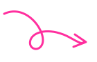
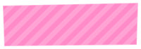
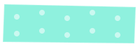

a free portfolio template
Hi, I'm [Your Name]. This is Scrapbook.
A free, open, hand-made-feeling portfolio template built with plain HTML, CSS, and JavaScript — no build tools, no frameworks. Fork it, break it, learn from it, make it yours.


currently
Say what you're building, learning, or into right now
This card is a good home for a highlight project, a "now" statement, or anything you want a first-time visitor to notice. Keep it short — two or three sentences reads better than a wall of text.
see all projects →
Tip: click the sun / moon icon top-right to try dark & light mode.
selected work
A few things worth showing off
toolbox
What's in the pencil case
HTML
CSS
JavaScript
SVG
Flexbox & Grid
Git
Responsive Design
Accessibility
Whatever you're learning next